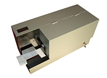

手形押印システム導入で、ルーチンで発生する単純作業を自動化し、生産性をアップ
昨今、手形の電子化で押印作業は少なくはなっていますが…、全くゼロにはなりません。
数枚程度なら手押し作業で良いかもしれませんが、増えれば増えるほど気が遠くなる作業です。
そんな貴社に、シンメイからひとつのご提案です。
各企業様での経理部門で、毎月締め日に約束手形や小切手を発行するにあたり、捺印事務作業は重要な仕事のひとつです。また、関連作業として回収手形を取立、または割引に出す際に同じく手形裏書に捺印事務作業が必要です。シンメイの「チェックスタンパー」は、これらの作業を代行し、効率的に完了させます。

手形裏書・手形振出の押印に対応
よりコンパクトに、より安価に！
手形押印対応機は、以下の３タイプがあります。
| 型式 | 用途 |
|---|---|
| CS-858 Ⅱ | 手形裏書専用 |
| CS-350B Ⅱ | 手形振出・裏書兼用 |
| CS-SAPⅡ | 手形裏書専用（押印位置自動読取機能付き）、 サーマルプリンター搭載で版が不要 |
